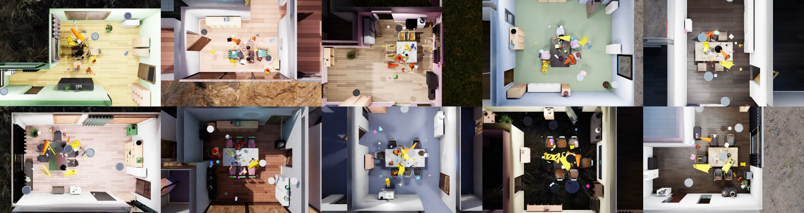
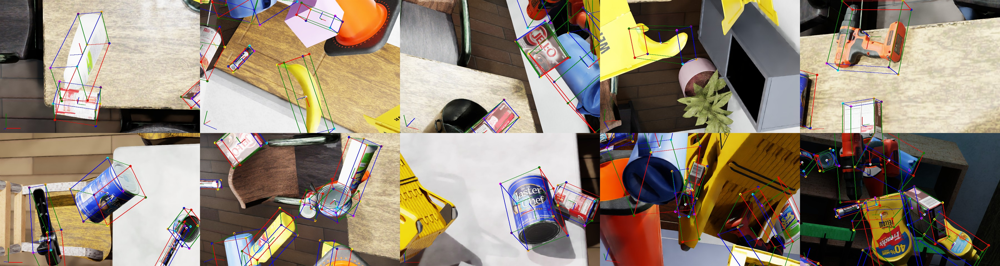

Environment Based Synthetic Dataset Generation with Infinigen#
이 튜토리얼은 omni.replicator 확장과 Infinigen의 절차적으로 생성된 환경을 사용하여 Isaac Sim에서 합성 데이터 생성(SDG) 파이프라인을 설정하는 방법을 설명합니다. 예제는 독립 실행형 워크플로우를 사용합니다.
{kind=link}

Infinigen이 생성한 방 예시.#
{kind=link}

합성 데이터셋 생성 파이프라인에서 수집된 데이터 예시.#
Learning Objectives#
이 튜토리얼에서 다음을 학습합니다:
Infinigen의 절차적으로 생성된 환경을 배경 장면으로 로드합니다.
SDG 및 물리 시뮬레이션을 위한 환경을 준비합니다.
데이터 수집을 위한 물리 활성화 목표 에셋(레이블됨)과 장면 다양성을 위한 방해 에셋(레이블 없음)을 로드합니다.
사용자 정의 간격에서 수동으로 트리거되는 기본 제공 Replicator 랜덤화기 그래프를 사용하며, 저장 프로세스와 분리합니다.
사용자 정의 랜덤화기를 위한 사용자 정의 USD / Isaac Sim API 함수를 사용합니다.
여러 Replicator 라이터와 카메라(렌더 제품)를 사용하여 다른 시점에서 다른 유형의 데이터를 저장합니다.
구성 파일을 사용하여 시뮬레이션 및 데이터 수집 프로세스를 쉽게 커스터마이징합니다.
유연성을 위한 구성 파라미터를 이해하고 커스터마이징합니다.
Prerequisites#
이 튜토리얼을 시작하기 전에 다음에 친숙해야 합니다:
USD 스테이지 생성 및 조작을 위한 USD / Isaac Sim API.
Isaac Sim에서의 강체 역학 및 물리 시뮬레이션.
Replicator 랜덤화 그래프 파이프라인을 더 잘 이해하기 위한 Replicator 랜덤화기와 OmniGraph.
독립 실행형 애플리케이션으로 시뮬레이션 실행.
Infinigen을 사용한 절차적 환경 생성.
Generating Infinigen Environments#
Infinigen 설치: Infinigen GitHub 저장소의 설치 지침을 따릅니다.
Note
Infinigen 장면 생성 단계는 Linux에서만 테스트되었습니다. Infinigen이 Isaac Sim 외부에서 유지 관리되는 외부 라이브러리이므로 현재 플랫폼 상태는 Infinigen 플랫폼 지원 매트릭스를 참조하세요.
환경 생성: Hello Room 지침을 사용하여 다양한 설정과 파라미터로 실내 장면을 생성합니다.
예시 스크립트: 다음 예시 스크립트(Linux)를 사용하여 다른 시드로 여러 식당 환경을 생성합니다. 스크립트는 터미널에서 직접 실행할 수 있습니다.
# Loop from 1 to 10 to generate 10 scenes for i in {1..10} do # Create the output folders for both the Infinigen generation and the Omniverse export mkdir -p outputs/indoors/dining_room_$i mkdir -p outputs/omniverse/dining_room_$i # Step 1: Run Infinigen scene generation for a DiningRoom scene with a specific seed python -m infinigen_examples.generate_indoors \ --seed $i \ --task coarse \ --output_folder outputs/indoors/dining_room_$i \ -g fast_solve.gin singleroom.gin \ -p compose_indoors.terrain_enabled=False restrict_solving.restrict_parent_rooms=\[\"DiningRoom\"\] && # Step 2: Export the generated scene to Omniverse-compatible format python -m infinigen.tools.export \ --input_folder outputs/indoors/dining_room_$i \ --output_folder outputs/omniverse/dining_room_$i \ -f usdc \ -r 1024 \ --omniverse done
이 스크립트는 시드 값을 변경하여 10개의 고유한 식당 환경을 생성합니다.
infinigen_examples.generate_indoors명령은 환경을 생성하고outputs/indoors/dining_room_$i에 저장합니다.infinigen.tools.export명령은 생성된 환경을 선택된 형식으로 내보내고outputs/omniverse/dining_room_$i에 저장합니다.-f usdc플래그는 내보낸 파일의 형식을 USD로 지정합니다.--omniverse플래그는 Omniverse 애플리케이션과의 호환성을 보장합니다.
Scenario Overview#
이 튜토리얼에서는 합성 데이터 생성을 위한 배경으로 절차적으로 생성된 환경을 사용합니다. 이 환경들은 충돌체와 물리 속성으로 구성되어 물리 기반 시뮬레이션을 가능하게 합니다. 각 실내 환경 내에서 레이블된 목표 에셋과 레이블 없는 방해 에셋을 배치할 '작업 영역'(이 경우 식탁)을 정의합니다.
에셋은 두 가지 범주로 나뉩니다:
떨어지는 에셋: 환경과 상호 작용하고 지면이나 테이블 같은 표면에 정착하는 물리 활성화 객체.
부유 에셋: 충돌체만 갖추고 공중에 부유하는 객체.
각 배경 환경에서 두 가지 시나리오에서 프레임을 캡처합니다:
작업 영역 주변에 부유하는 에셋.
지면이나 테이블 같은 표면에 정착한 물리 활성화 에셋.
이 프레임들을 캡처하기 위해 하나 이상의 라이터로 구성된 여러 카메라(렌더 제품)를 사용합니다. 카메라는 각 프레임에서 랜덤화되어 작업 영역 주변에서 위치를 변경하고 무작위로 선택된 목표 에셋을 향합니다.
한 환경의 캡처가 완료되면 새로운 환경이 로드되고, 충돌체와 물리 속성으로 구성되며 원하는 캡처 수에 도달할 때까지 프로세스가 반복됩니다.
캡처 프로세스 중 다양한 프레임에서 랜덤화기를 적용하여 장면에 가변성을 도입합니다. 이 랜덤화에는 다음이 포함됩니다:
객체 포즈.
돔 조명 설정을 포함한 조명 구성.
형태 방해 에셋의 색상.
이러한 랜덤화를 통해 데이터셋의 다양성이 증가하여 머신 러닝 모델 훈련에 더 강력하게 됩니다.
Getting Started#
이 튜토리얼의 메인 스크립트 위치:
<install_path>/standalone_examples/replicator/infinigen/infinigen_sdg.py
이 스크립트는 독립 실행형 애플리케이션으로 실행되도록 설계되었습니다. 기본 구성은 Python 딕셔너리 형태로 스크립트 자체에 저장됩니다. JSON 또는 YAML 형식의 사용자 정의 구성 파일을 제공하여 이 기본값을 덮어쓸 수 있습니다.
헬퍼 함수는 infinigen_sdg_utils.py 파일에 있습니다. 이 함수들은 환경 로드, 에셋 스폰, 객체 포즈 랜덤화, 물리 시뮬레이션 실행을 도와줍니다.
기본 구성으로 합성 데이터셋을 생성하려면 다음 명령을 실행합니다(Windows에서는 python.sh 대신 python.bat 사용):
./python.sh standalone_examples/replicator/infinigen/infinigen_sdg.py
여러 라이터와 기타 사용자 정의 설정을 지원하는 사용자 정의 구성 파일을 사용하려면 –config 인수를 사용합니다:
./python.sh standalone_examples/replicator/infinigen/infinigen_sdg.py \
--config standalone_examples/replicator/infinigen/config/infinigen_multi_writers_pt.yaml
Implementation#
다음 섹션은 합성 데이터 생성 파이프라인을 설정하고 실행하는 데 관련된 주요 단계의 개요를 제공합니다. 완전한 구현은 두 파일로 구성됩니다: 메인 스크립트와 유틸리티 모듈.
Main script
"""Generate synthetic datasets using infinigen (https://infinigen.org/) generated environments."""
import argparse
import json
import os
import yaml
from isaacsim import SimulationApp
# Default config dict, can be updated/replaced using json/yaml config files ('--config' cli argument)
config = {
"environments": {
# List of background environments (list of folders or files)
"folders": ["/Isaac/Samples/Replicator/Infinigen/dining_rooms/"],
"files": [],
},
"capture": {
# Number of captures (frames = total_captures * num_cameras)
"total_captures": 9,
# Number of captures per environment before running the simulation (objects in the air)
"num_floating_captures_per_env": 2,
# Number of captures per environment after running the simulation (objects fallen)
"num_dropped_captures_per_env": 2,
# Number of cameras to capture from (each camera will have a render product attached)
"num_cameras": 2,
# Resolution of the captured frames
"resolution": (720, 480),
# Disable render products throughout the piepline, enable them only when capturing the frames
"disable_render_products": False,
# Number of subframes to render (RealTimePathTracing) to avoid temporal rendering artifacts (e.g. ghosting)
"rt_subframes": 8,
# Use PathTracing renderer or RealTimePathTracing when capturing the frames
"path_tracing": False,
# Offset to avoid the images always being in the image center
"camera_look_at_target_offset": 0.1,
# Distance between the camera and the target object
"camera_distance_to_target_range": (1.15, 1.45),
# Number of scene lights to create in the working area
"num_scene_lights": 3,
},
"writers": [
{
# Type of the writer to use (e.g. PoseWriter, BasicWriter, etc.) and the kwargs to pass to the writer init
"type": "PoseWriter",
"kwargs": {
"output_dir": "_out_infinigen_posewriter",
"format": None,
"use_subfolders": True,
"write_debug_images": True,
"skip_empty_frames": False,
},
}
],
"labeled_assets": {
# Labeled assets with auto-labeling (e.g. 002_banana -> banana) using regex pattern replacement on the asset name
"auto_label": {
# Number of labeled assets to create from the given files/folders list
"num": 6,
# Chance to disable gravity for the labeled assets (0.0 - all the assets will fall, 1.0 - all the assets will float)
"gravity_disabled_chance": 0.25,
# List of folders and files to search for the labeled assets
"folders": ["/Isaac/Props/YCB/Axis_Aligned/"],
"files": ["/Isaac/Props/YCB/Axis_Aligned/036_wood_block.usd"],
# Regex pattern to replace in the asset name (e.g. "002_banana" -> "banana")
"regex_replace_pattern": r"^\d+_",
"regex_replace_repl": "",
},
# Manually labeled assets with specific labels and properties
"manual_label": [
{
"url": "/Isaac/Props/YCB/Axis_Aligned/008_pudding_box.usd",
"label": "pudding_box",
"num": 2,
"gravity_disabled_chance": 0.25,
},
{
"url": "/Isaac/Props/YCB/Axis_Aligned_Physics/006_mustard_bottle.usd",
"label": "mustard_bottle",
"num": 2,
"gravity_disabled_chance": 0.25,
},
],
},
"distractors": {
# Shape distractors (unlabeled background assets) to drop in the scene (e.g. capsules, cones, cylinders)
"shape_distractors": {
# Amount of shape distractors to create
"num": 20,
# Chance to disable gravity for the shape distractors
"gravity_disabled_chance": 0.25,
# List of shape types to randomly choose from
"types": ["capsule", "cone", "cylinder", "sphere", "cube"],
},
# Mesh distractors (unlabeled background assets) to drop in the scene
"mesh_distractors": {
# Amount of mesh distractors to create
"num": 8,
# Chance to disable gravity for the mesh distractors
"gravity_disabled_chance": 0.25,
# List of folders and files to search to randomly choose from
"folders": [
"/Isaac/Environments/Simple_Warehouse/Props/",
"/Isaac/Environments/Office/Props/",
],
"files": [
"/Isaac/Environments/Hospital/Props/SM_MedicalBag_01a.usd",
"/Isaac/Environments/Hospital/Props/SM_MedicalBox_01g.usd",
],
},
},
# Physics GPU memory settings for the simulation (override defaults if scenes are complex)
"physics": {
# GPU collision stack size in bytes (default: 300 MB, PhysX default is only 64 MB which is
# insufficient for infinigen scenes with many colliders)
"gpu_collision_stack_size": 314572800,
},
# Hide ceilling to get a top-down view of the scene, move viewport camera to the top-down view
"debug_mode": True,
}
# Check if there are any config files (yaml or json) are passed as arguments
parser = argparse.ArgumentParser()
parser.add_argument("--config", required=False, help="Include specific config parameters (json or yaml))")
parser.add_argument(
"--close-on-completion", action="store_true", help="Ensure the app closes on completion even in debug mode"
)
args, unknown = parser.parse_known_args()
args_config = {}
if args.config and os.path.isfile(args.config):
with open(args.config) as f:
if args.config.endswith(".json"):
args_config = json.load(f)
elif args.config.endswith(".yaml"):
args_config = yaml.safe_load(f)
else:
print(f"[SDG] Warning: Config file {args.config} is not json or yaml, using default config")
else:
print(f"[SDG] Warning: Config file {args.config} does not exist, using default config")
# Update the default config dict with the external one
config.update(args_config)
simulation_app = SimulationApp(launch_config={"headless": False})
from itertools import cycle
import carb.settings
import infinigen_sdg_utils as infinigen_utils
import numpy as np
import omni.kit.app
import omni.replicator.core as rep
import omni.usd
from isaacsim.core.utils.viewports import set_camera_view
# Run the SDG pipeline on the scenarios
def run_sdg(config):
"""Run the synthetic data generation pipeline on the configured scenarios."""
# Load the config parameters
env_config = config.get("environments", {})
env_urls = infinigen_utils.get_usd_paths(
files=env_config.get("files", []), folders=env_config.get("folders", []), skip_folder_keywords=[".thumbs"]
)
if not env_urls:
print("[SDG] Error: No environment USD files found. Please check the 'environments' config.")
return
print(f"[SDG] Found {len(env_urls)} environment(s)")
capture_config = config.get("capture", {})
writers_config = config.get("writers", {})
labeled_assets_config = config.get("labeled_assets", {})
distractors_config = config.get("distractors", {})
# Create a new stage
print("[SDG] Creating a new stage")
omni.usd.get_context().new_stage()
stage = omni.usd.get_context().get_stage()
# Disable capture on play
rep.orchestrator.set_capture_on_play(False)
# Disable UJITSO cooking ([Warning] [omni.ujitso] UJITSO : Build storage validation failed)
carb.settings.get_settings().set("/physics/cooking/ujitsoCollisionCooking", False)
# Set DLSS to Quality mode (2) for best SDG results , options: 0 (Performance), 1 (Balanced), 2 (Quality), 3 (Auto)
carb.settings.get_settings().set("rtx/post/dlss/execMode", 2)
# Initialize randomization
rep.set_global_seed(12)
rng = np.random.default_rng(12)
# Debug mode (hide ceiling, move viewport camera to the top-down view)
debug_mode = config.get("debug_mode", False)
# Create the cameras
cameras = []
num_cameras = capture_config.get("num_cameras", 0)
rep.functional.create.scope(name="Cameras")
for i in range(num_cameras):
cam_prim = rep.functional.create.camera(parent="/Cameras", name=f"cam_{i}", clipping_range=(0.25, 1000))
cameras.append(cam_prim)
print(f"[SDG] Created {len(cameras)} cameras")
# Create the render products for the cameras
render_products = []
resolution = capture_config.get("resolution", (1280, 720))
disable_render_products = capture_config.get("disable_render_products", False)
for cam in cameras:
rp = rep.create.render_product(cam.GetPath(), resolution, name=f"rp_{cam.GetName()}")
if disable_render_products:
rp.hydra_texture.set_updates_enabled(False)
render_products.append(rp)
print(f"[SDG] Created {len(render_products)} render products")
# Only create the writers if there are render products to attach to
writers = []
if render_products:
for writer_config in writers_config:
writer = infinigen_utils.setup_writer(writer_config)
if writer:
writer.attach(render_products)
writers.append(writer)
print(
f"[SDG] {writer_config['type']}'s out dir: {writer_config.get('kwargs', {}).get('output_dir', '')}"
)
print(f"[SDG] Created {len(writers)} writers")
# Load target assets with auto-labeling (e.g. 002_banana -> banana)
auto_label_config = labeled_assets_config.get("auto_label", {})
auto_floating_assets, auto_falling_assets = infinigen_utils.load_auto_labeled_assets(auto_label_config, rng)
print(f"[SDG] Loaded {len(auto_floating_assets)} floating auto-labeled assets")
print(f"[SDG] Loaded {len(auto_falling_assets)} falling auto-labeled assets")
# Load target assets with manual labels
manual_label_config = labeled_assets_config.get("manual_label", [])
manual_floating_assets, manual_falling_assets = infinigen_utils.load_manual_labeled_assets(manual_label_config, rng)
print(f"[SDG] Loaded {len(manual_floating_assets)} floating manual-labeled assets")
print(f"[SDG] Loaded {len(manual_falling_assets)} falling manual-labeled assets")
target_assets = auto_floating_assets + auto_falling_assets + manual_floating_assets + manual_falling_assets
# Load the shape distractors
shape_distractors_config = distractors_config.get("shape_distractors", {})
floating_shapes, falling_shapes = infinigen_utils.load_shape_distractors(shape_distractors_config, rng)
print(f"[SDG] Loaded {len(floating_shapes)} floating shape distractors")
print(f"[SDG] Loaded {len(falling_shapes)} falling shape distractors")
shape_distractors = floating_shapes + falling_shapes
# Load the mesh distractors
mesh_distractors_config = distractors_config.get("mesh_distractors", {})
floating_meshes, falling_meshes = infinigen_utils.load_mesh_distractors(mesh_distractors_config, rng)
print(f"[SDG] Loaded {len(floating_meshes)} floating mesh distractors")
print(f"[SDG] Loaded {len(falling_meshes)} falling mesh distractors")
mesh_distractors = floating_meshes + falling_meshes
# Resolve any centimeter-meter scale issues of the assets
infinigen_utils.resolve_scale_issues_with_metrics_assembler()
# Create lights to randomize in the working area
scene_lights = []
num_scene_lights = capture_config.get("num_scene_lights", 0)
for i in range(num_scene_lights):
light_prim = stage.DefinePrim(f"/Lights/SphereLight_scene_{i}", "SphereLight")
scene_lights.append(light_prim)
print(f"[SDG] Created {len(scene_lights)} scene lights")
# Register replicator randomizers and trigger them once
print("[SDG] Registering replicator graph randomizers")
infinigen_utils.register_dome_light_randomizer()
infinigen_utils.register_shape_distractors_color_randomizer(shape_distractors)
# Configure the PhysX scene GPU memory settings before running any simulation.
# This prevents PxGpuDynamicsMemoryConfig::collisionStackSize buffer overflow errors
# when simulating complex scenes with many colliders (distractors, assets, environment meshes).
physics_config = config.get("physics", {})
print("[SDG] Configuring physics scene GPU memory settings")
infinigen_utils.configure_physics_scene(physics_config)
# Check if the render mode needs to be switched to path tracing for the capture (by default: RealTimePathTracing)
use_path_tracing = capture_config.get("path_tracing", False)
# Capture detail using subframes (https://docs.omniverse.nvidia.com/extensions/latest/ext_replicator/subframes_examples.html)
rt_subframes = capture_config.get("rt_subframes", 3)
# Min and max distance between the camera and the target object
camera_distance_to_target_range = capture_config.get("camera_distance_to_target_range", (0.5, 1.5))
# Number of captures (frames = total_captures * num_cameras)
# NOTE: if captured frames have no labeled data, they can be skipped (e.g. PoseWriter with skip_empty_frames=True)
total_captures = capture_config.get("total_captures", 0)
# Number of captures per environment with the objects in the air or dropped
num_floating_captures_per_env = capture_config.get("num_floating_captures_per_env", 0)
num_dropped_captures_per_env = capture_config.get("num_dropped_captures_per_env", 0)
# Start the SDG loop
env_cycle = cycle(env_urls)
capture_counter = 0
while capture_counter < total_captures:
# Load the next environment
env_url = next(env_cycle)
# Load the new environment
print(f"[SDG] Loading environment: {env_url}")
infinigen_utils.load_env(env_url, prim_path="/Environment")
# Setup the environment (add collision, fix lights, etc.) and update the app once to apply the changes
print(f"[SDG] Setting up the environment")
infinigen_utils.setup_env(root_path="/Environment", hide_top_walls=debug_mode)
simulation_app.update()
# Get the location of the prim above which the assets will be randomized
working_area_loc = infinigen_utils.get_matching_prim_location(
match_string="TableDining", root_path="/Environment"
)
# Move viewport above the working area to get a top-down view of the scene
if debug_mode:
camera_loc = (working_area_loc[0], working_area_loc[1], working_area_loc[2] + 10)
set_camera_view(eye=np.array(camera_loc), target=np.array(working_area_loc))
# Get the spawn areas as offseted location ranges from the working area (min_x, min_y, min_z, max_x, max_y, max_z)
print(f"[SDG] Randomizing {len(target_assets)} target assets around the working area")
target_loc_range = infinigen_utils.offset_range((-0.5, -0.5, 1, 0.5, 0.5, 1.5), working_area_loc)
infinigen_utils.randomize_poses(
target_assets,
location_range=target_loc_range,
rotation_range=(0, 360),
scale_range=(0.95, 1.15),
rng=rng,
)
# Mesh distractors
print(f"[SDG] Randomizing {len(mesh_distractors)} mesh distractors around the working area")
mesh_loc_range = infinigen_utils.offset_range((-1, -1, 1, 1, 1, 2), working_area_loc)
infinigen_utils.randomize_poses(
mesh_distractors,
location_range=mesh_loc_range,
rotation_range=(0, 360),
scale_range=(0.3, 1.0),
rng=rng,
)
# Shape distractors
print(f"[SDG] Randomizing {len(shape_distractors)} shape distractors around the working area")
shape_loc_range = infinigen_utils.offset_range((-1.5, -1.5, 1, 1.5, 1.5, 2), working_area_loc)
infinigen_utils.randomize_poses(
shape_distractors,
location_range=shape_loc_range,
rotation_range=(0, 360),
scale_range=(0.01, 0.1),
rng=rng,
)
print(f"[SDG] Randomizing {len(scene_lights)} scene lights properties and locations around the working area")
lights_loc_range = infinigen_utils.offset_range((-2, -2, 1, 2, 2, 3), working_area_loc)
infinigen_utils.randomize_lights(
scene_lights,
location_range=lights_loc_range,
intensity_range=(500, 2500),
color_range=(0.1, 0.1, 0.1, 0.9, 0.9, 0.9),
rng=rng,
)
print("[SDG] Randomizing dome lights")
rep.utils.send_og_event(event_name="randomize_dome_lights")
print("[SDG] Randomizing shape distractor colors")
rep.utils.send_og_event(event_name="randomize_shape_distractor_colors")
# Run the physics simulation for a few frames to solve any collisions
print("[SDG] Fixing collisions through physics simulation")
simulation_app.update()
infinigen_utils.run_simulation(num_frames=4, render=True)
# Check if the render products need to be enabled for the capture
if disable_render_products:
for rp in render_products:
rp.hydra_texture.set_updates_enabled(True)
# Check if the render mode needs to be switched to path tracing for the capture
if use_path_tracing:
print("[SDG] Switching to PathTracing render mode")
carb.settings.get_settings().set("/rtx/rendermode", "PathTracing")
# Capture frames with the objects in the air
for i in range(num_floating_captures_per_env):
# Check if the total captures have been reached
if capture_counter >= total_captures:
break
# Randomize the camera poses
print(f"[SDG] Randomizing camera poses ({len(cameras)} cameras)")
infinigen_utils.randomize_camera_poses(
cameras, target_assets, camera_distance_to_target_range, polar_angle_range=(0, 75), rng=rng
)
print(
f"[SDG] Capturing floating assets {i+1}/{num_floating_captures_per_env} (total: {capture_counter+1}/{total_captures})"
)
rep.orchestrator.step(rt_subframes=rt_subframes, delta_time=0.0)
capture_counter += 1
# Check if the render products need to be disabled until the next capture
if disable_render_products:
for rp in render_products:
rp.hydra_texture.set_updates_enabled(False)
# Check if the render mode needs to be switched back to raytracing until the next capture
if use_path_tracing:
carb.settings.get_settings().set("/rtx/rendermode", "RealTimePathTracing")
print("[SDG] Running the simulation")
infinigen_utils.run_simulation(num_frames=200, render=False)
# Check if the render products need to be enabled for the capture
if disable_render_products:
for rp in render_products:
rp.hydra_texture.set_updates_enabled(True)
# Check if the render mode needs to be switched to path tracing for the capture
if use_path_tracing:
carb.settings.get_settings().set("/rtx/rendermode", "PathTracing")
for i in range(num_dropped_captures_per_env):
# Check if the total captures have been reached
if capture_counter >= total_captures:
break
# Spawn the cameras with a smaller polar angle to have mostly a top-down view of the objects
print("[SDG] Randomizing camera poses")
infinigen_utils.randomize_camera_poses(
cameras,
target_assets,
distance_range=camera_distance_to_target_range,
polar_angle_range=(0, 45),
rng=rng,
)
print(
f"[SDG] Capturing dropped assets {i+1}/{num_dropped_captures_per_env} (total: {capture_counter+1}/{total_captures})"
)
rep.orchestrator.step(rt_subframes=rt_subframes, delta_time=0.0)
capture_counter += 1
# Check if the render products need to be disabled until the next capture
if disable_render_products:
for rp in render_products:
rp.hydra_texture.set_updates_enabled(False)
# Check if the render mode needs to be switched back to raytracing until the next capture
if use_path_tracing:
carb.settings.get_settings().set("/rtx/rendermode", "RealTimePathTracing")
# Wait until the data is written to the disk
rep.orchestrator.wait_until_complete()
# Detach the writers
print("[SDG] Detaching writers")
for writer in writers:
writer.detach()
# Destroy render products
print("[SDG] Destroying render products")
for rp in render_products:
rp.destroy()
print(f"[SDG] Finished, captured {capture_counter * num_cameras} frames")
# Check if debug mode is enabled
debug_mode = config.get("debug_mode", False)
# Start the SDG pipeline
print("[SDG] Starting the SDG pipeline")
run_sdg(config)
print("[SDG] Pipeline finished")
# Make sure the app closes on completion even if in debug mode
if args.close_on_completion:
simulation_app.close()
# In debug mode, keep the app running until manually closed
if debug_mode:
while simulation_app.is_running():
simulation_app.update()
simulation_app.close()
Utils module
"""Provide utility functions for Infinigen synthetic data generation."""
import math
import os
import re
from itertools import chain
import numpy as np
import omni.client
import omni.kit.app
import omni.kit.commands
import omni.physics.core
import omni.replicator.core as rep
import omni.timeline
import omni.usd
from isaacsim.core.utils.semantics import add_labels, remove_labels
from isaacsim.core.utils.stage import add_reference_to_stage
from isaacsim.storage.native import get_assets_root_path
from pxr import Gf, PhysxSchema, Usd, UsdGeom, UsdPhysics
def add_colliders(root_prim: Usd.Prim, approximation_type: str = "convexHull") -> None:
"""Add collision attributes to mesh and geometry primitives under the root prim."""
for desc_prim in Usd.PrimRange(root_prim):
if desc_prim.IsA(UsdGeom.Gprim):
if not desc_prim.HasAPI(UsdPhysics.CollisionAPI):
collision_api = UsdPhysics.CollisionAPI.Apply(desc_prim)
else:
collision_api = UsdPhysics.CollisionAPI(desc_prim)
collision_api.CreateCollisionEnabledAttr(True)
if desc_prim.IsA(UsdGeom.Mesh):
if not desc_prim.HasAPI(UsdPhysics.MeshCollisionAPI):
mesh_collision_api = UsdPhysics.MeshCollisionAPI.Apply(desc_prim)
else:
mesh_collision_api = UsdPhysics.MeshCollisionAPI(desc_prim)
mesh_collision_api.CreateApproximationAttr().Set(approximation_type)
def add_rigid_body(prim: Usd.Prim, disable_gravity: bool = False, ensure_mass: bool = False) -> None:
"""Apply rigid body physics, optionally ensuring a valid mass property exists (defaults to 1.0 kg)."""
rep.functional.physics.apply_rigid_body(prim, disableGravity=disable_gravity)
if not ensure_mass:
return
if not prim.HasAPI(UsdPhysics.MassAPI):
UsdPhysics.MassAPI.Apply(prim)
mass_api = UsdPhysics.MassAPI(prim)
mass_attr = mass_api.GetMassAttr()
if not mass_attr or mass_attr.Get() is None or mass_attr.Get() <= 0:
mass_api.CreateMassAttr(1.0)
def get_random_pose_on_sphere(
origin: tuple[float, float, float],
radius_range: tuple[float, float],
polar_angle_range: tuple[float, float],
camera_forward_axis: tuple[float, float, float] = (0, 0, -1),
rng: np.random.Generator = None,
) -> tuple[Gf.Vec3d, Gf.Quatf]:
"""Generate a random pose on a sphere looking at the origin, with specified radius and polar angle ranges."""
if rng is None:
rng = np.random.default_rng()
# https://docs.isaacsim.omniverse.nvidia.com/latest/reference_material/reference_conventions.html
# Convert degrees to radians for polar angles (theta)
polar_angle_min_rad = math.radians(polar_angle_range[0])
polar_angle_max_rad = math.radians(polar_angle_range[1])
# Generate random spherical coordinates
radius = rng.uniform(radius_range[0], radius_range[1])
polar_angle = rng.uniform(polar_angle_min_rad, polar_angle_max_rad)
azimuthal_angle = rng.uniform(0, 2 * math.pi)
# Convert spherical coordinates to Cartesian coordinates
x = radius * math.sin(polar_angle) * math.cos(azimuthal_angle)
y = radius * math.sin(polar_angle) * math.sin(azimuthal_angle)
z = radius * math.cos(polar_angle)
# Calculate the location in 3D space
location = Gf.Vec3d(origin[0] + x, origin[1] + y, origin[2] + z)
# Calculate direction vector from camera to look_at point
direction = Gf.Vec3d(origin) - location
direction_normalized = direction.GetNormalized()
# Calculate rotation from forward direction (rotateFrom) to direction vector (rotateTo)
rotation = Gf.Rotation(Gf.Vec3d(camera_forward_axis), direction_normalized)
orientation = Gf.Quatf(rotation.GetQuat())
return location, orientation
def randomize_camera_poses(
cameras: list[Usd.Prim],
targets: list[Usd.Prim],
distance_range: tuple[float, float],
polar_angle_range: tuple[float, float] = (0, 180),
look_at_offset: tuple[float, float] = (-0.1, 0.1),
rng: np.random.Generator = None,
) -> None:
"""Randomize the poses of cameras to look at random targets with adjustable distance and offset."""
for cam in cameras:
# Get a random target asset to look at
target_asset = targets[rng.integers(len(targets))]
# Add a look_at offset so the target is not always in the center of the camera view
target_loc = target_asset.GetAttribute("xformOp:translate").Get()
target_loc = (
target_loc[0] + rng.uniform(look_at_offset[0], look_at_offset[1]),
target_loc[1] + rng.uniform(look_at_offset[0], look_at_offset[1]),
target_loc[2] + rng.uniform(look_at_offset[0], look_at_offset[1]),
)
# Generate random camera pose
loc, quat = get_random_pose_on_sphere(target_loc, distance_range, polar_angle_range, rng=rng)
# Set the camera's transform attributes to the generated location and orientation
rep.functional.modify.pose(cam, position_value=loc, rotation_value=quat)
def get_usd_paths_from_folder(
folder_path: str, recursive: bool = True, usd_paths: list[str] = None, skip_keywords: list[str] = None
) -> list[str]:
"""Retrieve USD file paths from a folder, optionally searching recursively and filtering by keywords."""
if usd_paths is None:
usd_paths = []
skip_keywords = skip_keywords or []
ext_manager = omni.kit.app.get_app().get_extension_manager()
if not ext_manager.is_extension_enabled("omni.client"):
ext_manager.set_extension_enabled_immediate("omni.client", True)
result, entries = omni.client.list(folder_path)
if result != omni.client.Result.OK:
print(f"[SDG] Error: Could not list assets in path: {folder_path}")
return usd_paths
for entry in entries:
if any(keyword.lower() in entry.relative_path.lower() for keyword in skip_keywords):
continue
_, ext = os.path.splitext(entry.relative_path)
if ext in [".usd", ".usda", ".usdc"]:
path_posix = os.path.join(folder_path, entry.relative_path).replace("\\", "/")
usd_paths.append(path_posix)
elif recursive and entry.flags & omni.client.ItemFlags.CAN_HAVE_CHILDREN:
sub_folder = os.path.join(folder_path, entry.relative_path).replace("\\", "/")
get_usd_paths_from_folder(sub_folder, recursive=recursive, usd_paths=usd_paths, skip_keywords=skip_keywords)
return usd_paths
def get_usd_paths(
files: list[str] = None, folders: list[str] = None, skip_folder_keywords: list[str] = None
) -> list[str]:
"""Retrieve USD paths from specified files and folders, optionally filtering out specific folder keywords."""
def resolve_path(path: str, assets_root: str, is_folder: bool = False) -> str:
"""Resolve path to full URL: remote URLs and existing local paths used as-is, otherwise prefixed with assets_root."""
# Remote URLs - use as-is
if path.startswith(("omniverse://", "http://", "https://", "file://")):
return path
# Windows absolute path (e.g., C:\path or C:/path) - use as-is
if len(path) > 2 and path[1] == ":" and path[2] in ("/", "\\"):
return path
# Local absolute path that exists - use as-is
if path.startswith("/") and (os.path.isfile(path) or (is_folder and os.path.isdir(path))):
return path
# Nucleus relative path - prepend assets root
return assets_root + path
files = files or []
folders = folders or []
skip_folder_keywords = skip_folder_keywords or []
assets_root_path = get_assets_root_path()
env_paths = []
for file_path in files:
env_paths.append(resolve_path(file_path, assets_root_path, is_folder=False))
for folder_path in folders:
resolved_folder = resolve_path(folder_path, assets_root_path, is_folder=True)
env_paths.extend(get_usd_paths_from_folder(resolved_folder, recursive=True, skip_keywords=skip_folder_keywords))
return env_paths
def load_env(usd_path: str, prim_path: str, remove_existing: bool = True) -> Usd.Prim:
"""Load an environment from a USD file into the stage at the specified prim path, optionally removing any existing prim."""
stage = omni.usd.get_context().get_stage()
# Remove existing prim if specified
if remove_existing and stage.GetPrimAtPath(prim_path):
omni.kit.commands.execute("DeletePrimsCommand", paths=[prim_path])
root_prim = add_reference_to_stage(usd_path=usd_path, prim_path=prim_path)
return root_prim
def add_colliders_to_env(root_path: str | None = None, approximation_type: str = "none") -> None:
"""Add colliders to all mesh prims within the specified root path in the stage."""
stage = omni.usd.get_context().get_stage()
prim = stage.GetPseudoRoot() if root_path is None else stage.GetPrimAtPath(root_path)
for prim in Usd.PrimRange(prim):
if prim.IsA(UsdGeom.Mesh):
add_colliders(prim, approximation_type)
def find_matching_prims(
match_strings: list[str], root_path: str | None = None, prim_type: str | None = None, first_match_only: bool = False
) -> Usd.Prim | list[Usd.Prim] | None:
"""Find prims matching specified strings, with optional type filtering and single match return."""
stage = omni.usd.get_context().get_stage()
root_prim = stage.GetPseudoRoot() if root_path is None else stage.GetPrimAtPath(root_path)
matching_prims = []
for prim in Usd.PrimRange(root_prim):
if any(match in str(prim.GetPath()) for match in match_strings):
if prim_type is None or prim.GetTypeName() == prim_type:
if first_match_only:
return prim
matching_prims.append(prim)
return matching_prims if not first_match_only else None
def hide_matching_prims(match_strings: list[str], root_path: str | None = None, prim_type: str | None = None) -> None:
"""Set visibility of prims matching specified strings to 'invisible' within the root path."""
stage = omni.usd.get_context().get_stage()
root_prim = stage.GetPseudoRoot() if root_path is None else stage.GetPrimAtPath(root_path)
for prim in Usd.PrimRange(root_prim):
if prim_type is None or prim.GetTypeName() == prim_type:
if any(match in str(prim.GetPath()) for match in match_strings):
prim.GetAttribute("visibility").Set("invisible")
def setup_env(root_path: str | None = None, approximation_type: str = "none", hide_top_walls: bool = False) -> None:
"""Set up the environment with colliders, ceiling light adjustments, and optional top wall hiding."""
# Fix ceiling lights: meshes are blocking the light and need to be set to invisible
ceiling_light_meshes = find_matching_prims(["001_SPLIT_GLA"], root_path, "Xform")
for light_mesh in ceiling_light_meshes:
light_mesh.GetAttribute("visibility").Set("invisible")
# Hide ceiling light meshes for lighting fix
hide_matching_prims(["001_SPLIT_GLA"], root_path, "Xform")
# Hide top walls for better debug view, if specified
if hide_top_walls:
hide_matching_prims(["_exterior", "_ceiling"], root_path)
# Add colliders to the environment
add_colliders_to_env(root_path, approximation_type)
# Fix dining table collision by setting it to a bounding cube approximation
table_prim = find_matching_prims(
match_strings=["TableDining"], root_path=root_path, prim_type="Xform", first_match_only=True
)
if table_prim is not None:
add_colliders(table_prim, approximation_type="boundingCube")
else:
print("[SDG] Warning: Could not find dining table prim in the environment")
def create_shape_distractors(
num_distractors: int,
shape_types: list[str],
root_path: str,
gravity_disabled_chance: float,
rng: np.random.Generator = None,
) -> tuple[list[Usd.Prim], list[Usd.Prim]]:
"""Create shape distractors with optional gravity settings, returning lists of floating and falling shapes."""
if rng is None:
rng = np.random.default_rng()
stage = omni.usd.get_context().get_stage()
floating_shapes = []
falling_shapes = []
for _ in range(num_distractors):
rand_shape = shape_types[rng.integers(len(shape_types))]
disable_gravity = rng.random() < gravity_disabled_chance
name_prefix = "floating_" if disable_gravity else "falling_"
prim_path = omni.usd.get_stage_next_free_path(stage, f"{root_path}/{name_prefix}{rand_shape}", False)
prim = stage.DefinePrim(prim_path, rand_shape.capitalize())
add_colliders(prim)
add_rigid_body(prim, disable_gravity=disable_gravity, ensure_mass=True)
(floating_shapes if disable_gravity else falling_shapes).append(prim)
return floating_shapes, falling_shapes
def load_shape_distractors(
shape_distractors_config: dict, rng: np.random.Generator = None
) -> tuple[list[Usd.Prim], list[Usd.Prim]]:
"""Load shape distractors based on configuration, returning lists of floating and falling shapes."""
num_shapes = shape_distractors_config.get("num", 0)
shape_types = shape_distractors_config.get("shape_types", ["capsule", "cone", "cylinder", "sphere", "cube"])
shape_gravity_disabled_chance = shape_distractors_config.get("gravity_disabled_chance", 0.0)
return create_shape_distractors(num_shapes, shape_types, "/Distractors", shape_gravity_disabled_chance, rng)
def create_mesh_distractors(
num_distractors: int,
mesh_urls: list[str],
root_path: str,
gravity_disabled_chance: float,
rng: np.random.Generator = None,
) -> tuple[list[Usd.Prim], list[Usd.Prim]]:
"""Create mesh distractors from specified URLs with optional gravity settings."""
if rng is None:
rng = np.random.default_rng()
stage = omni.usd.get_context().get_stage()
floating_meshes = []
falling_meshes = []
for _ in range(num_distractors):
rand_mesh_url = mesh_urls[rng.integers(len(mesh_urls))]
disable_gravity = rng.random() < gravity_disabled_chance
name_prefix = "floating_" if disable_gravity else "falling_"
prim_name = os.path.basename(rand_mesh_url).split(".")[0]
prim_path = omni.usd.get_stage_next_free_path(stage, f"{root_path}/{name_prefix}{prim_name}", False)
try:
prim = add_reference_to_stage(usd_path=rand_mesh_url, prim_path=prim_path)
except Exception as e:
print(f"[SDG] Error: Failed to load mesh distractor '{rand_mesh_url}': {e}")
continue
add_colliders(prim)
add_rigid_body(prim, disable_gravity=disable_gravity, ensure_mass=True)
(floating_meshes if disable_gravity else falling_meshes).append(prim)
return floating_meshes, falling_meshes
def load_mesh_distractors(
mesh_distractors_config: dict, rng: np.random.Generator = None
) -> tuple[list[Usd.Prim], list[Usd.Prim]]:
"""Load mesh distractors based on configuration, returning lists of floating and falling meshes."""
num_meshes = mesh_distractors_config.get("num", 0)
mesh_gravity_disabled_chance = mesh_distractors_config.get("gravity_disabled_chance", 0.0)
mesh_folders = mesh_distractors_config.get("folders", [])
mesh_files = mesh_distractors_config.get("files", [])
mesh_urls = get_usd_paths(
files=mesh_files, folders=mesh_folders, skip_folder_keywords=["material", "texture", ".thumbs"]
)
floating_meshes, falling_meshes = create_mesh_distractors(
num_meshes, mesh_urls, "/Distractors", mesh_gravity_disabled_chance, rng
)
for prim in chain(floating_meshes, falling_meshes):
remove_labels(prim, include_descendants=True)
return floating_meshes, falling_meshes
def create_auto_labeled_assets(
num_assets: int,
asset_urls: list[str],
root_path: str,
regex_replace_pattern: str,
regex_replace_repl: str,
gravity_disabled_chance: float,
rng: np.random.Generator = None,
) -> tuple[list[Usd.Prim], list[Usd.Prim]]:
"""Create assets with automatic labels, applying optional gravity settings."""
if rng is None:
rng = np.random.default_rng()
stage = omni.usd.get_context().get_stage()
floating_assets = []
falling_assets = []
for _ in range(num_assets):
asset_url = asset_urls[rng.integers(len(asset_urls))]
disable_gravity = rng.random() < gravity_disabled_chance
name_prefix = "floating_" if disable_gravity else "falling_"
basename = os.path.basename(asset_url)
name_without_ext = os.path.splitext(basename)[0]
label = re.sub(regex_replace_pattern, regex_replace_repl, name_without_ext)
prim_path = omni.usd.get_stage_next_free_path(stage, f"{root_path}/{name_prefix}{label}", False)
try:
prim = add_reference_to_stage(usd_path=asset_url, prim_path=prim_path)
except Exception as e:
print(f"[SDG] Error: Failed to load asset '{asset_url}': {e}")
continue
add_colliders(prim)
add_rigid_body(prim, disable_gravity=disable_gravity, ensure_mass=True)
remove_labels(prim, include_descendants=True)
add_labels(prim, labels=[label], instance_name="class")
(floating_assets if disable_gravity else falling_assets).append(prim)
return floating_assets, falling_assets
def load_auto_labeled_assets(
auto_label_config: dict, rng: np.random.Generator = None
) -> tuple[list[Usd.Prim], list[Usd.Prim]]:
"""Load auto-labeled assets based on configuration, returning lists of floating and falling assets."""
num_assets = auto_label_config.get("num", 0)
gravity_disabled_chance = auto_label_config.get("gravity_disabled_chance", 0.0)
assets_files = auto_label_config.get("files", [])
assets_folders = auto_label_config.get("folders", [])
assets_urls = get_usd_paths(
files=assets_files, folders=assets_folders, skip_folder_keywords=["material", "texture", ".thumbs"]
)
regex_replace_pattern = auto_label_config.get("regex_replace_pattern", "")
regex_replace_repl = auto_label_config.get("regex_replace_repl", "")
return create_auto_labeled_assets(
num_assets,
assets_urls,
"/Assets",
regex_replace_pattern,
regex_replace_repl,
gravity_disabled_chance,
rng,
)
def create_labeled_assets(
num_assets: int,
asset_url: str,
label: str,
root_path: str,
gravity_disabled_chance: float,
rng: np.random.Generator = None,
) -> tuple[list[Usd.Prim], list[Usd.Prim]]:
"""Create labeled assets with optional gravity settings, returning lists of floating and falling assets."""
if rng is None:
rng = np.random.default_rng()
stage = omni.usd.get_context().get_stage()
assets_root_path = get_assets_root_path()
asset_url = (
asset_url
if asset_url.startswith(("omniverse://", "http://", "https://", "file://"))
else assets_root_path + asset_url
)
floating_assets = []
falling_assets = []
for _ in range(num_assets):
disable_gravity = rng.random() < gravity_disabled_chance
name_prefix = "floating_" if disable_gravity else "falling_"
prim_path = omni.usd.get_stage_next_free_path(stage, f"{root_path}/{name_prefix}{label}", False)
prim = add_reference_to_stage(usd_path=asset_url, prim_path=prim_path)
add_colliders(prim)
add_rigid_body(prim, disable_gravity=disable_gravity, ensure_mass=True)
remove_labels(prim, include_descendants=True)
add_labels(prim, labels=[label], instance_name="class")
(floating_assets if disable_gravity else falling_assets).append(prim)
return floating_assets, falling_assets
def load_manual_labeled_assets(
manual_labeled_assets_config: list[dict], rng: np.random.Generator = None
) -> tuple[list[Usd.Prim], list[Usd.Prim]]:
"""Load manually labeled assets based on configuration, returning lists of floating and falling assets."""
labeled_floating_assets = []
labeled_falling_assets = []
for labeled_asset_config in manual_labeled_assets_config:
asset_url = labeled_asset_config.get("url", "")
asset_label = labeled_asset_config.get("label", "")
num_assets = labeled_asset_config.get("num", 0)
gravity_disabled_chance = labeled_asset_config.get("gravity_disabled_chance", 0.0)
floating_assets, falling_assets = create_labeled_assets(
num_assets,
asset_url,
asset_label,
"/Assets",
gravity_disabled_chance,
rng,
)
labeled_floating_assets.extend(floating_assets)
labeled_falling_assets.extend(falling_assets)
return labeled_floating_assets, labeled_falling_assets
def resolve_scale_issues_with_metrics_assembler() -> None:
"""Enable and execute metrics assembler to resolve scale issues in the stage."""
import omni.kit.app
ext_manager = omni.kit.app.get_app().get_extension_manager()
if not ext_manager.is_extension_enabled("omni.usd.metrics.assembler"):
ext_manager.set_extension_enabled_immediate("omni.usd.metrics.assembler", True)
from omni.metrics.assembler.core import get_metrics_assembler_interface
stage_id = omni.usd.get_context().get_stage_id()
get_metrics_assembler_interface().resolve_stage(stage_id)
def get_matching_prim_location(match_string, root_path=None):
"""Return the translation of the first prim matching the given string."""
prim = find_matching_prims(
match_strings=[match_string], root_path=root_path, prim_type="Xform", first_match_only=True
)
if prim is None:
print("[SDG] Warning: Could not find matching prim, returning (0, 0, 0)")
return (0, 0, 0)
if prim.HasAttribute("xformOp:translate"):
return prim.GetAttribute("xformOp:translate").Get()
elif prim.HasAttribute("xformOp:transform"):
return prim.GetAttribute("xformOp:transform").Get().ExtractTranslation()
else:
print(f"[SDG] Warning: Could not find location attribute for '{prim.GetPath()}', returning (0, 0, 0)")
return (0, 0, 0)
def offset_range(
range_coords: tuple[float, float, float, float, float, float], offset: tuple[float, float, float]
) -> tuple[float, float, float, float, float, float]:
"""Offset the min and max coordinates of a range by the specified offset."""
return (
range_coords[0] + offset[0], # min_x
range_coords[1] + offset[1], # min_y
range_coords[2] + offset[2], # min_z
range_coords[3] + offset[0], # max_x
range_coords[4] + offset[1], # max_y
range_coords[5] + offset[2], # max_z
)
def randomize_poses(
prims: list[Usd.Prim],
location_range: tuple[float, float, float, float, float, float],
rotation_range: tuple[float, float],
scale_range: tuple[float, float],
rng: np.random.Generator = None,
) -> None:
"""Randomize the location, rotation, and scale of a list of prims within specified ranges."""
if rng is None:
rng = np.random.default_rng()
for prim in prims:
rand_loc = (
rng.uniform(location_range[0], location_range[3]),
rng.uniform(location_range[1], location_range[4]),
rng.uniform(location_range[2], location_range[5]),
)
rand_rot = (
rng.uniform(rotation_range[0], rotation_range[1]),
rng.uniform(rotation_range[0], rotation_range[1]),
rng.uniform(rotation_range[0], rotation_range[1]),
)
rand_scale = rng.uniform(scale_range[0], scale_range[1])
rep.functional.modify.pose(prim, position_value=rand_loc, rotation_value=rand_rot, scale_value=rand_scale)
def get_or_create_physx_scene(prim_path: str = "/PhysicsScene") -> PhysxSchema.PhysxSceneAPI:
"""Get the existing PhysX scene or create a new one at the given prim path.
Searches the current stage for an existing UsdPhysics.Scene prim. If found, applies
and returns the PhysxSceneAPI on it. If not found, creates a new physics scene at the
given prim path and returns the PhysxSceneAPI.
Args:
prim_path: The prim path to create a new physics scene at if none exists.
Returns:
The PhysxSceneAPI applied to the physics scene prim.
"""
stage = omni.usd.get_context().get_stage()
for prim in stage.Traverse():
if prim.IsA(UsdPhysics.Scene):
return PhysxSchema.PhysxSceneAPI.Apply(prim)
UsdPhysics.Scene.Define(stage, prim_path)
return PhysxSchema.PhysxSceneAPI.Apply(stage.GetPrimAtPath(prim_path))
# Default GPU collision stack size for the infinigen SDG pipeline (300 MB).
# The PhysX default (64 MB) is insufficient for scenes with many colliders (e.g. 30+ shape
# distractors, 10+ mesh distractors, labeled assets, and environment collision meshes).
# The error message from PhysX recommends at least ~272 MB for a typical infinigen scene,
# so 300 MB provides a comfortable margin.
INFINIGEN_DEFAULT_GPU_COLLISION_STACK_SIZE = 314572800
def configure_physics_scene(physics_config: dict | None = None) -> None:
"""Configure the PhysX scene GPU memory settings for the infinigen SDG pipeline.
This must be called before running any physics simulation. It sets the GPU collision
stack size and other GPU memory parameters on the PhysX scene to prevent buffer overflow
errors when simulating complex scenes with many colliders.
Args:
physics_config: Optional dictionary with physics configuration overrides.
Supported keys (all optional):
- gpu_collision_stack_size (int): GPU collision stack size in bytes.
Defaults to INFINIGEN_DEFAULT_GPU_COLLISION_STACK_SIZE (300 MB).
- gpu_found_lost_pairs_capacity (int): GPU found/lost pairs capacity.
- gpu_found_lost_aggregate_pairs_capacity (int): GPU found/lost aggregate pairs capacity.
- gpu_total_aggregate_pairs_capacity (int): GPU total aggregate pairs capacity.
- gpu_max_rigid_contact_count (int): Maximum rigid body contact count on GPU.
- gpu_max_rigid_patch_count (int): Maximum rigid body contact patches on GPU.
- gpu_heap_capacity (int): GPU heap capacity in bytes.
- gpu_temp_buffer_capacity (int): GPU temporary buffer capacity in bytes.
"""
physics_config = physics_config or {}
physx_scene = get_or_create_physx_scene()
gpu_collision_stack_size = physics_config.get(
"gpu_collision_stack_size", INFINIGEN_DEFAULT_GPU_COLLISION_STACK_SIZE
)
physx_scene.GetGpuCollisionStackSizeAttr().Set(gpu_collision_stack_size)
# Apply other GPU memory settings if provided
gpu_settings_map = {
"gpu_found_lost_pairs_capacity": physx_scene.GetGpuFoundLostPairsCapacityAttr,
"gpu_found_lost_aggregate_pairs_capacity": physx_scene.GetGpuFoundLostAggregatePairsCapacityAttr,
"gpu_total_aggregate_pairs_capacity": physx_scene.GetGpuTotalAggregatePairsCapacityAttr,
"gpu_max_rigid_contact_count": physx_scene.GetGpuMaxRigidContactCountAttr,
"gpu_max_rigid_patch_count": physx_scene.GetGpuMaxRigidPatchCountAttr,
"gpu_heap_capacity": physx_scene.GetGpuHeapCapacityAttr,
"gpu_temp_buffer_capacity": physx_scene.GetGpuTempBufferCapacityAttr,
}
for key, attr_getter in gpu_settings_map.items():
if key in physics_config:
attr_getter().Set(physics_config[key])
print(f"[SDG] Configured PhysX scene GPU collision stack size: {gpu_collision_stack_size} bytes")
def run_simulation(num_frames: int, render: bool = True) -> None:
"""Run a simulation for a specified number of frames, optionally without rendering."""
if render:
# Start the timeline and advance the app, this will render the physics simulation results every frame
timeline = omni.timeline.get_timeline_interface()
timeline.set_start_time(0)
timeline.set_end_time(1000000)
timeline.set_looping(False)
timeline.play()
for _ in range(num_frames):
omni.kit.app.get_app().update()
timeline.pause()
else:
# Run the physics simulation steps without advancing the app
physx_scene = get_or_create_physx_scene()
# Get simulation parameters
physx_dt = 1 / physx_scene.GetTimeStepsPerSecondAttr().Get()
physics_sim_interface = omni.physics.core.get_physics_simulation_interface()
# Run physics simulation for each frame
for _ in range(num_frames):
physics_sim_interface.simulate(physx_dt, 0)
def register_dome_light_randomizer() -> None:
"""Register a replicator graph randomizer for dome lights using various sky textures."""
assets_root_path = get_assets_root_path()
dome_textures = [
assets_root_path + "/NVIDIA/Assets/Skies/Cloudy/champagne_castle_1_4k.hdr",
assets_root_path + "/NVIDIA/Assets/Skies/Cloudy/kloofendal_48d_partly_cloudy_4k.hdr",
assets_root_path + "/NVIDIA/Assets/Skies/Clear/evening_road_01_4k.hdr",
assets_root_path + "/NVIDIA/Assets/Skies/Clear/mealie_road_4k.hdr",
assets_root_path + "/NVIDIA/Assets/Skies/Clear/qwantani_4k.hdr",
assets_root_path + "/NVIDIA/Assets/Skies/Clear/noon_grass_4k.hdr",
assets_root_path + "/NVIDIA/Assets/Skies/Evening/evening_road_01_4k.hdr",
assets_root_path + "/NVIDIA/Assets/Skies/Night/kloppenheim_02_4k.hdr",
assets_root_path + "/NVIDIA/Assets/Skies/Night/moonlit_golf_4k.hdr",
]
with rep.trigger.on_custom_event(event_name="randomize_dome_lights"):
rep.create.light(light_type="Dome", texture=rep.distribution.choice(dome_textures))
def register_shape_distractors_color_randomizer(shape_distractors: list[Usd.Prim]) -> None:
"""Register a replicator graph randomizer to change colors of shape distractors."""
with rep.trigger.on_custom_event(event_name="randomize_shape_distractor_colors"):
shape_distractors_paths = [prim.GetPath() for prim in shape_distractors]
shape_distractors_group = rep.create.group(shape_distractors_paths)
with shape_distractors_group:
rep.randomizer.color(colors=rep.distribution.uniform((0, 0, 0), (1, 1, 1)))
def randomize_lights(
lights: list[Usd.Prim],
location_range: tuple[float, float, float, float, float, float] | None = None,
color_range: tuple[float, float, float, float, float, float] | None = None,
intensity_range: tuple[float, float] | None = None,
rng: np.random.Generator = None,
) -> None:
"""Randomize location, color, and intensity of specified lights within given ranges."""
if rng is None:
rng = np.random.default_rng()
for light in lights:
# Randomize the location of the light
if location_range is not None:
rand_loc = (
rng.uniform(location_range[0], location_range[3]),
rng.uniform(location_range[1], location_range[4]),
rng.uniform(location_range[2], location_range[5]),
)
rep.functional.modify.pose(light, position_value=rand_loc)
# Randomize the color of the light
if color_range is not None:
rand_color = (
rng.uniform(color_range[0], color_range[3]),
rng.uniform(color_range[1], color_range[4]),
rng.uniform(color_range[2], color_range[5]),
)
light.GetAttribute("inputs:color").Set(rand_color)
# Randomize the intensity of the light
if intensity_range is not None:
rand_intensity = rng.uniform(intensity_range[0], intensity_range[1])
light.GetAttribute("inputs:intensity").Set(rand_intensity)
def setup_writer(config: dict) -> None:
"""Setup a writer based on configuration settings, initializing with specified arguments."""
writer_type = config.get("type", None)
if writer_type is None:
print("[SDG] Warning: No writer type specified, skipping writer setup")
return None
try:
writer = rep.writers.get(writer_type)
except Exception as e:
print(f"[SDG] Error: Writer type '{writer_type}' not found: {e}")
return None
writer_kwargs = config.get("kwargs", {})
if out_dir := writer_kwargs.get("output_dir"):
# If not an absolute path, make path relative to the current working directory
if not os.path.isabs(out_dir):
out_dir = os.path.join(os.getcwd(), out_dir)
writer_kwargs["output_dir"] = out_dir
writer.initialize(**writer_kwargs)
return writer
Configuration Files#
예시 구성 파일은 infinigen/config 디렉토리에 제공됩니다. 이 파일들을 사용하여 캡처 수, 포함할 에셋, 랜덤화 파라미터, 사용할 라이터 등 시뮬레이션의 다양한 측면을 커스터마이징할 수 있습니다.
여러 라이터 사용을 보여주는 사용자 정의 YAML 구성 파일 예시:
Custom YAML Configuration File
environments:
# List of background environments (list of folders or files)
folders:
- /Isaac/Samples/Replicator/Infinigen/dining_rooms/
files: []
capture:
# Number of captures (frames = total_captures * num_cameras)
total_captures: 12
# Number of captures per environment before running the simulation (objects in the air)
num_floating_captures_per_env: 2
# Number of captures per environment after running the simulation (objects dropped)
num_dropped_captures_per_env: 3
# Number of cameras to capture from (each camera will have a render product attached)
num_cameras: 2
# Resolution of the captured frames
resolution: [640, 480]
# Disable render products throughout the pipeline, enable them only when capturing the frames
disable_render_products: true
# Number of subframes to render (RealTimePathTracing) to avoid temporal rendering artifacts (e.g. ghosting)
rt_subframes: 8
# Use PathTracing renderer instead of RealTimePathTracing when capturing the frames
path_tracing: true
# Offset to avoid the images always being in the image center
camera_look_at_target_offset: 0.1
# Distance between the camera and the target object
camera_distance_to_target_range: [1.05, 1.25]
# Number of scene lights to create in the working area
num_scene_lights: 4
writers:
# Type of the writer to use (e.g. PoseWriter, BasicWriter, etc.) and the kwargs to pass to the writer init
- type: BasicWriter
kwargs:
output_dir: "_out_infinigen_basicwriter_pt"
rgb: true
semantic_segmentation: true
colorize_semantic_segmentation: true
use_common_output_dir: false
- type: DataVisualizationWriter
kwargs:
output_dir: "_out_infinigen_dataviswriter_pt"
bounding_box_2d_tight: true
bounding_box_2d_tight_params:
background: rgb
bounding_box_3d: true
bounding_box_3d_params:
background: normals
labeled_assets:
# Labeled assets with auto-labeling (e.g. 002_banana -> banana) using regex pattern replacement on the asset name
auto_label:
# Number of labeled assets to create from the given files/folders list
num: 5
# Chance to disable gravity for the labeled assets (0.0 - all the assets will fall, 1.0 - all the assets will float)
gravity_disabled_chance: 0.25
# List of folders and files to search for the labeled assets
folders:
- /Isaac/Props/YCB/Axis_Aligned/
files:
- /Isaac/Props/YCB/Axis_Aligned/036_wood_block.usd
# Regex pattern to replace in the asset name (e.g. "002_banana" -> "banana")
regex_replace_pattern: "^\\d+_"
regex_replace_repl: ""
# Manually labeled assets with specific labels and properties
manual_label:
- url: /Isaac/Props/YCB/Axis_Aligned/008_pudding_box.usd
label: pudding_box
num: 2
gravity_disabled_chance: 0.25
- url: /Isaac/Props/YCB/Axis_Aligned_Physics/006_mustard_bottle.usd
label: mustard_bottle
num: 2
gravity_disabled_chance: 0.25
distractors:
# Shape distractors (unlabeled background assets) to drop in the scene (e.g. capsules, cones, cylinders)
shape_distractors:
# Amount of shape distractors to create
num: 30
# Chance to disable gravity for the shape distractors
gravity_disabled_chance: 0.25
# List of shape types to randomly choose from
types: ["capsule", "cone", "cylinder", "sphere", "cube"]
# Mesh distractors (unlabeled background assets) to drop in the scene
mesh_distractors:
# Amount of mesh distractors to create
num: 10
# Chance to disable gravity for the mesh distractors
gravity_disabled_chance: 0.25
# List of folders and files to search to randomly choose from
folders:
- /Isaac/Environments/Office/Props/
files:
- /Isaac/Environments/Simple_Warehouse/Props/SM_CardBoxD_04_1847.usd
- /Isaac/Environments/Simple_Warehouse/Props/SM_CardBoxA_01_414.usd
- /Isaac/Environments/Simple_Warehouse/Props/S_TrafficCone.usd
- /Isaac/Environments/Simple_Warehouse/Props/S_WetFloorSign.usd
- /Isaac/Environments/Hospital/Props/SM_MedicalBag_01a.usd
- /Isaac/Environments/Hospital/Props/SM_MedicalBox_01g.usd
# Physics GPU memory settings for the simulation
physics:
# GPU collision stack size in bytes (300 MB, PhysX default of 64 MB overflows with many colliders)
gpu_collision_stack_size: 314572800
# Hide ceiling, move viewport camera to top-down view above the working area
debug_mode: true
Configuration Parameters#
구성 파라미터에 대한 설명:
environments:
folders: 사용할 Infinigen 환경이 포함된 디렉토리 목록.
files: 로드할 환경의 특정 USD 파일.
capture:
total_captures: 생성할 총 캡처 수.
num_floating_captures_per_env: 물리 시뮬레이션 실행 전에 찍을 캡처 수(에셋이 부유 중).
num_dropped_captures_per_env: 물리 시뮬레이션 후에 찍을 캡처 수(에셋이 정착 후).
num_cameras: 이미지 캡처에 사용할 카메라 수.
resolution: 렌더링된 이미지의 해상도(너비, 높이).
disable_render_products: true이면 성능 향상을 위해 캡처 사이에 렌더 제품을 비활성화합니다.
rt_subframes: 각 캡처에 렌더링할 서브프레임 수.
path_tracing: true이면 렌더링에 경로 추적을 사용합니다(고품질, 느림).
camera_look_at_target_offset: 카메라가 목표 에셋을 볼 때 적용되는 무작위 오프셋.
camera_distance_to_target_range: 카메라에서 목표 에셋까지의 거리 범위.
num_scene_lights: 장면에 추가할 조명 수.
writers: 데이터 출력에 사용할 라이터 목록.
type: 라이터 유형(예: BasicWriter, DataVisualizationWriter).
kwargs: 각 라이터 유형에 특정한 인수.
labeled_assets:
auto_label: 자동으로 레이블된 에셋에 대한 구성.
num: 스폰할 에셋 수.
gravity_disabled_chance: 에셋에 중력이 비활성화될 확률(부유).
folders와 files: 에셋 USD 파일의 소스.
regex_replace_pattern과 regex_replace_repl: 파일 이름에서 레이블을 생성하는 데 사용됩니다.
manual_label: 수동으로 지정된 레이블을 가진 에셋 목록.
url: 에셋의 USD 파일 경로.
label: 할당할 시맨틱 레이블.
num: 스폰할 인스턴스 수.
gravity_disabled_chance: 중력이 비활성화될 확률.
distractors:
shape_distractors: 기본 형태 방해 에셋에 대한 구성.
num: 스폰할 방해 에셋 수.
gravity_disabled_chance: 중력이 비활성화될 확률.
types: 사용할 기본 형태 목록.
mesh_distractors: 메시 방해 에셋에 대한 구성.
num: 스폰할 방해 에셋 수.
gravity_disabled_chance: 중력이 비활성화될 확률.
folders와 files: 방해 에셋 USD 파일의 소스.
physics:
gpu_collision_stack_size: 바이트 단위의 GPU 충돌 스택 크기. 64 MB의 PhysX 기본값은 많은 충돌체(환경 메시, 방해 에셋, 레이블된 에셋)가 있는 복잡한 Infinigen 장면에 부족합니다. 기본값은 300 MB(
314572800)입니다. PhysX가collisionStackSize buffer overflow오류를 보고하는 경우 오류 메시지에서 권장하는 크기 이상으로 이 값을 늘립니다.필요한 경우 추가 GPU 메모리 설정을 구성할 수 있습니다:
gpu_found_lost_pairs_capacity,gpu_found_lost_aggregate_pairs_capacity,gpu_total_aggregate_pairs_capacity,gpu_max_rigid_contact_count,gpu_max_rigid_patch_count,gpu_heap_capacity,gpu_temp_buffer_capacity.
debug_mode: true로 설정하면 개발 및 디버깅 중 장면의 더 나은 뷰를 제공하기 위해 천장과 같은 특정 요소가 숨겨집니다.
Loading Infinigen Environments#
Infinigen에서 생성된 환경을 Isaac Sim 스테이지에 로드합니다. 환경은 구성 파일에서 폴더 또는 개별 파일을 통해 지정됩니다.
Loading Infinigen Environments
def run_sdg(config):
# Load the config parameters
env_config = config.get("environments", {})
env_urls = infinigen_utils.get_usd_paths(
files=env_config.get("files", []), folders=env_config.get("folders", []), skip_folder_keywords=[".thumbs"]
)
if not env_urls:
print("[SDG] Error: No environment USD files found. Please check the 'environments' config.")
return
print(f"[SDG] Found {len(env_urls)} environment(s)")
# Start the SDG loop
env_cycle = cycle(env_urls)
capture_counter = 0
while capture_counter < total_captures:
# Load the next environment
env_url = next(env_cycle)
# Load the new environment
print(f"[SDG] Loading environment: {env_url}")
infinigen_utils.load_env(env_url, prim_path="/Environment")
위 코드에서 get_usd_paths 유틸리티 함수를 사용하여 구성의 지정된 폴더와 파일에서 모든 USD 파일을 수집합니다. skip_folder_keywords 파라미터는 지정된 키워드를 포함하는 디렉토리(예: .thumbs 썸네일 폴더)를 필터링합니다. 그런 다음 이 환경들을 순환하여 하나씩 로드합니다.
Setting Up the Scene#
환경을 로드한 후 다음을 통해 장면을 설정합니다:
디버깅 모드가 선택된 경우 더 나은 가시성을 위해 불필요한 요소(예: 천장)를 숨깁니다.
물리 시뮬레이션을 위한 환경에 충돌체를 추가합니다.
물리 속성을 가진 레이블된 에셋과 방해 에셋을 로드합니다.
작업 영역 내에서 에셋 포즈를 랜덤화합니다.
Loading Assets
# Load target assets with auto-labeling (e.g. 002_banana -> banana)
auto_label_config = labeled_assets_config.get("auto_label", {})
auto_floating_assets, auto_falling_assets = infinigen_utils.load_auto_labeled_assets(auto_label_config, rng)
print(f"[SDG] Loaded {len(auto_floating_assets)} floating auto-labeled assets")
print(f"[SDG] Loaded {len(auto_falling_assets)} falling auto-labeled assets")
# Load target assets with manual labels
manual_label_config = labeled_assets_config.get("manual_label", [])
manual_floating_assets, manual_falling_assets = infinigen_utils.load_manual_labeled_assets(manual_label_config, rng)
print(f"[SDG] Loaded {len(manual_floating_assets)} floating manual-labeled assets")
print(f"[SDG] Loaded {len(manual_falling_assets)} falling manual-labeled assets")
target_assets = auto_floating_assets + auto_falling_assets + manual_floating_assets + manual_falling_assets
# Load the shape distractors
shape_distractors_config = distractors_config.get("shape_distractors", {})
floating_shapes, falling_shapes = infinigen_utils.load_shape_distractors(shape_distractors_config, rng)
print(f"[SDG] Loaded {len(floating_shapes)} floating shape distractors")
print(f"[SDG] Loaded {len(falling_shapes)} falling shape distractors")
shape_distractors = floating_shapes + falling_shapes
# Load the mesh distractors
mesh_distractors_config = distractors_config.get("mesh_distractors", {})
floating_meshes, falling_meshes = infinigen_utils.load_mesh_distractors(mesh_distractors_config, rng)
print(f"[SDG] Loaded {len(floating_meshes)} floating mesh distractors")
print(f"[SDG] Loaded {len(falling_meshes)} falling mesh distractors")
mesh_distractors = floating_meshes + falling_meshes
Setting Up the Environment and Randomizing Poses
# Setup the environment (add collision, fix lights, etc.) and update the app once to apply the changes
print(f"[SDG] Setting up the environment")
infinigen_utils.setup_env(root_path="/Environment", hide_top_walls=debug_mode)
simulation_app.update()
# Get the location of the prim above which the assets will be randomized
working_area_loc = infinigen_utils.get_matching_prim_location(
match_string="TableDining", root_path="/Environment"
)
# Move viewport above the working area to get a top-down view of the scene
if debug_mode:
camera_loc = (working_area_loc[0], working_area_loc[1], working_area_loc[2] + 10)
set_camera_view(eye=np.array(camera_loc), target=np.array(working_area_loc))
# Get the spawn areas as offseted location ranges from the working area (min_x, min_y, min_z, max_x, max_y, max_z)
print(f"[SDG] Randomizing {len(target_assets)} target assets around the working area")
target_loc_range = infinigen_utils.offset_range((-0.5, -0.5, 1, 0.5, 0.5, 1.5), working_area_loc)
infinigen_utils.randomize_poses(
target_assets,
location_range=target_loc_range,
rotation_range=(0, 360),
scale_range=(0.95, 1.15),
rng=rng,
)
# Mesh distractors
print(f"[SDG] Randomizing {len(mesh_distractors)} mesh distractors around the working area")
mesh_loc_range = infinigen_utils.offset_range((-1, -1, 1, 1, 1, 2), working_area_loc)
infinigen_utils.randomize_poses(
mesh_distractors,
location_range=mesh_loc_range,
rotation_range=(0, 360),
scale_range=(0.3, 1.0),
rng=rng,
)
# Shape distractors
print(f"[SDG] Randomizing {len(shape_distractors)} shape distractors around the working area")
shape_loc_range = infinigen_utils.offset_range((-1.5, -1.5, 1, 1.5, 1.5, 2), working_area_loc)
infinigen_utils.randomize_poses(
shape_distractors,
location_range=shape_loc_range,
rotation_range=(0, 360),
scale_range=(0.01, 0.1),
rng=rng,
)
설명:
에셋 로드: 에셋은 파이프라인 시작 시 한 번 로드됩니다.
load_auto_labeled_assets함수는 정규식 패턴을 사용하여 파일 이름에서 자동으로 레이블을 생성합니다(예:002_banana는banana가 됨).load_manual_labeled_assets함수는 명시적으로 정의된 레이블을 사용합니다. 두 함수는 부유(중력 비활성화) 및 떨어지는(중력 활성화) 에셋의 별도 목록을 반환합니다.환경 설정:
setup_env유틸리티 함수는 환경에 충돌체를 추가하고debug_mode가true인 경우 상단 벽을 숨깁니다. 상단 벽을 숨기면 디버깅 중 장면의 명확한 뷰를 제공합니다.작업 영역 위치:
get_matching_prim_location을 사용하여 작업 영역으로 사용하는 식탁의 위치를 찾습니다.포즈 랜덤화:
randomize_poses함수는 명시적인location_range,rotation_range,scale_range파라미터를 사용합니다.offset_range헬퍼 함수는 작업 영역 위치에 상대적인 위치 범위를 생성합니다.
Creating Cameras and Render Products#
다른 시점에서 이미지를 캡처하기 위해 여러 카메라를 생성합니다. 각 카메라에는 Replicator 라이터가 데이터를 저장하는 데 사용하는 렌더 제품이 할당됩니다.
Creating Cameras and Render Products
# Create the cameras
cameras = []
num_cameras = capture_config.get("num_cameras", 0)
rep.functional.create.scope(name="Cameras")
for i in range(num_cameras):
cam_prim = rep.functional.create.camera(parent="/Cameras", name=f"cam_{i}", clipping_range=(0.25, 1000))
cameras.append(cam_prim)
print(f"[SDG] Created {len(cameras)} cameras")
# Create the render products for the cameras
render_products = []
resolution = capture_config.get("resolution", (1280, 720))
disable_render_products = capture_config.get("disable_render_products", False)
for cam in cameras:
rp = rep.create.render_product(cam.GetPath(), resolution, name=f"rp_{cam.GetName()}")
if disable_render_products:
rp.hydra_texture.set_updates_enabled(False)
render_products.append(rp)
print(f"[SDG] Created {len(render_products)} render products")
설명:
카메라를 위한 조직 범위를 생성하기 위해 Replicator의
rep.functional.create.scope를 사용합니다.카메라는 구성 가능한 클리핑 범위를 가진 카메라 생성을 위한 더 깔끔한 API를 제공하는
rep.functional.create.camera를 사용하여 생성됩니다.렌더 제품은 Replicator의
create.render_product함수를 사용하여 생성됩니다.구성에서
disable_render_products가true로 설정된 경우, 생성 시 렌더 제품을 비활성화합니다. 계산 리소스를 절약하기 위해 캡처 중에만 활성화됩니다.
Setting Up Replicator Writers#
시뮬레이션 중 생성된 다양한 유형의 데이터를 수집하고 저장하기 위해 여러 Replicator 라이터를 사용합니다. 라이터는 구성 파일에 지정되며 BasicWriter, DataVisualizationWriter, PoseWriter, 사용자 정의 라이터 등 다양한 유형을 포함할 수 있습니다.
Setting Up Replicator Writers
# Only create the writers if there are render products to attach to
writers = []
if render_products:
for writer_config in writers_config:
writer = infinigen_utils.setup_writer(writer_config)
if writer:
writer.attach(render_products)
writers.append(writer)
print(
f"[SDG] {writer_config['type']}'s out dir: {writer_config.get('kwargs', {}).get('output_dir', '')}"
)
print(f"[SDG] Created {len(writers)} writers")
설명:
라이터는 연결할 렌더 제품이 있는 경우에만 생성됩니다.
setup_writer유틸리티 함수는 구성을 기반으로 라이터를 초기화하여 출력 디렉토리 경로와 라이터별 인수를 처리합니다.라이터는 렌더 제품(카메라)에 부착되어 지정된 시점에서 데이터를 캡처합니다.
여러 라이터를 동시에 사용하여 다른 데이터셋 유형을 생성할 수 있습니다.
Domain Randomization#
데이터셋의 다양성을 향상시키기 위해 장면의 다양한 요소에 도메인 랜덤화를 적용합니다:
객체 포즈 랜덤화: 에셋의 위치, 방향, 스케일이 지정된 범위 내에서 랜덤화됩니다.
조명 랜덤화: 장면 조명이 위치, 강도, 색상 측면에서 랜덤화됩니다.
돔 조명 랜덤화: 환경 돔 조명이 다른 조명 조건을 시뮬레이션하기 위해 랜덤화됩니다.
형태 방해 에셋 색상 랜덤화: 형태 방해 에셋의 색상이 시각적 다양성을 높이기 위해 랜덤화됩니다.
Creating and Registering Randomizers
# Create lights to randomize in the working area
scene_lights = []
num_scene_lights = capture_config.get("num_scene_lights", 0)
for i in range(num_scene_lights):
light_prim = stage.DefinePrim(f"/Lights/SphereLight_scene_{i}", "SphereLight")
scene_lights.append(light_prim)
print(f"[SDG] Created {len(scene_lights)} scene lights")
# Register replicator randomizers and trigger them once
print("[SDG] Registering replicator graph randomizers")
infinigen_utils.register_dome_light_randomizer()
infinigen_utils.register_shape_distractors_color_randomizer(shape_distractors)
Triggering Randomizations
print(f"[SDG] Randomizing {len(scene_lights)} scene lights properties and locations around the working area")
lights_loc_range = infinigen_utils.offset_range((-2, -2, 1, 2, 2, 3), working_area_loc)
infinigen_utils.randomize_lights(
scene_lights,
location_range=lights_loc_range,
intensity_range=(500, 2500),
color_range=(0.1, 0.1, 0.1, 0.9, 0.9, 0.9),
rng=rng,
)
print("[SDG] Randomizing dome lights")
rep.utils.send_og_event(event_name="randomize_dome_lights")
print("[SDG] Randomizing shape distractor colors")
rep.utils.send_og_event(event_name="randomize_shape_distractor_colors")
설명:
장면 조명: 추가 구형 조명이 USD API(
stage.DefinePrim)를 사용하여 생성되고 이후 랜덤화를 위해 저장됩니다.랜덤화기 등록: 돔 조명과 형태 방해 에셋 색상을 위한 사용자 정의 Replicator 그래프 랜덤화기가 설정 중 한 번 등록됩니다.
조명 랜덤화:
randomize_lights유틸리티 함수는 지정된 범위 내에서 조명 속성(위치, 강도, 색상)을 랜덤화합니다.이벤트 기반 트리거링: 랜덤화는 등록된 랜덤화기 그래프에 OmniGraph 이벤트를 보내는
rep.utils.send_og_event를 사용하여 트리거됩니다.
Configuring Physics GPU Memory#
많은 충돌체(환경 메시, 방해 에셋, 레이블된 에셋)가 있는 복잡한 Infinigen 장면은 기본 PhysX GPU 충돌 스택 크기(64 MB)를 초과하여 PxGpuDynamicsMemoryConfig::collisionStackSize buffer overflow 오류와 접촉 손실을 일으킬 수 있습니다. 이를 방지하기 위해 시뮬레이션 실행 전에 PhysX 장면 GPU 메모리 설정을 구성합니다.
Configuring Physics Scene GPU Memory
# Configure the PhysX scene GPU memory settings before running any simulation.
# This prevents PxGpuDynamicsMemoryConfig::collisionStackSize buffer overflow errors
# when simulating complex scenes with many colliders (distractors, assets, environment meshes).
physics_config = config.get("physics", {})
print("[SDG] Configuring physics scene GPU memory settings")
infinigen_utils.configure_physics_scene(physics_config)
설명:
configure_physics_scene유틸리티 함수는 PhysX 장면 프림을 검색하거나 생성하고 구성의 값을 기반으로gpuCollisionStackSize속성(및 선택적으로 다른 GPU 메모리 속성)을 설정합니다.기본 충돌 스택 크기는 300 MB(
314572800바이트)로 설정되어 Infinigen 장면에서 일반적으로 필요한 ~272 MB 이상의 여유 마진을 제공합니다. 이 값은physics.gpu_collision_stack_size구성 파라미터를 통해 재정의할 수 있습니다.
Running Physics Simulation#
환경 내에서 객체가 자연스럽게 상호 작용할 수 있도록 물리 시뮬레이션을 실행합니다. 여기에는 다음이 포함됩니다:
초기 겹침을 해결하기 위한 짧은 시뮬레이션 실행.
객체가 정착하기 전에 이미지 캡처(부유 캡처).
객체가 떨어지고 정착하게 하는 더 긴 시뮬레이션 실행.
객체가 정착한 후 이미지 캡처(떨어진 캡처).
Running Physics Simulation
# Run the physics simulation for a few frames to solve any collisions
print("[SDG] Fixing collisions through physics simulation")
simulation_app.update()
infinigen_utils.run_simulation(num_frames=4, render=True)
# Check if the render products need to be enabled for the capture
if disable_render_products:
for rp in render_products:
rp.hydra_texture.set_updates_enabled(True)
# Check if the render mode needs to be switched to path tracing for the capture
if use_path_tracing:
print("[SDG] Switching to PathTracing render mode")
carb.settings.get_settings().set("/rtx/rendermode", "PathTracing")
# Capture frames with the objects in the air
for i in range(num_floating_captures_per_env):
# Check if the total captures have been reached
if capture_counter >= total_captures:
break
# Randomize the camera poses
print(f"[SDG] Randomizing camera poses ({len(cameras)} cameras)")
infinigen_utils.randomize_camera_poses(
cameras, target_assets, camera_distance_to_target_range, polar_angle_range=(0, 75), rng=rng
)
print(
f"[SDG] Capturing floating assets {i+1}/{num_floating_captures_per_env} (total: {capture_counter+1}/{total_captures})"
)
rep.orchestrator.step(rt_subframes=rt_subframes, delta_time=0.0)
capture_counter += 1
# Check if the render products need to be disabled until the next capture
if disable_render_products:
for rp in render_products:
rp.hydra_texture.set_updates_enabled(False)
# Check if the render mode needs to be switched back to raytracing until the next capture
if use_path_tracing:
carb.settings.get_settings().set("/rtx/rendermode", "RealTimePathTracing")
print("[SDG] Running the simulation")
infinigen_utils.run_simulation(num_frames=200, render=False)
# Check if the render products need to be enabled for the capture
if disable_render_products:
for rp in render_products:
rp.hydra_texture.set_updates_enabled(True)
# Check if the render mode needs to be switched to path tracing for the capture
if use_path_tracing:
carb.settings.get_settings().set("/rtx/rendermode", "PathTracing")
for i in range(num_dropped_captures_per_env):
# Check if the total captures have been reached
if capture_counter >= total_captures:
break
# Spawn the cameras with a smaller polar angle to have mostly a top-down view of the objects
print("[SDG] Randomizing camera poses")
infinigen_utils.randomize_camera_poses(
cameras,
target_assets,
distance_range=camera_distance_to_target_range,
polar_angle_range=(0, 45),
rng=rng,
)
print(
f"[SDG] Capturing dropped assets {i+1}/{num_dropped_captures_per_env} (total: {capture_counter+1}/{total_captures})"
)
rep.orchestrator.step(rt_subframes=rt_subframes, delta_time=0.0)
capture_counter += 1
# Check if the render products need to be disabled until the next capture
if disable_render_products:
for rp in render_products:
rp.hydra_texture.set_updates_enabled(False)
# Check if the render mode needs to be switched back to raytracing until the next capture
if use_path_tracing:
carb.settings.get_settings().set("/rtx/rendermode", "RealTimePathTracing")
설명:
초기 시뮬레이션: 짧은 시뮬레이션이 에셋 간의 초기 겹침을 해결합니다.
렌더 제품 관리: 렌더 제품은 캡처 중에만 활성화되고 시뮬레이션 중에는 비활성화되어 계산 리소스를 절약합니다.
경로 추적: 활성화되면 렌더 모드가 고품질 캡처를 위해 PathTracing으로 전환되고 시뮬레이션 중에는 RealTimePathTracing으로 돌아갑니다.
부유 캡처: 에셋이 여전히 부유 중인 동안 이미지를 캡처하며, 다양한 시점을 위해 더 큰 극각(0-75°)을 사용하여 카메라를 배치합니다.
물리 시뮬레이션: 더 긴 시뮬레이션(200 프레임)은 에셋이 물리에 따라 떨어지고 정착하게 하며, 효율성을 위해 렌더링 없이 실행됩니다.
떨어진 캡처: 에셋이 정착한 후 이미지를 캡처하며, 주로 위에서 보는 시점을 위해 더 작은 극각(0-45°)을 사용합니다.
캡처 카운터: 각 캡처는 카운터를 증가시키며, 총 캡처 제한을 준수하기 위해 조기 종료 확인이 있습니다.
Capturing Data#
다양한 객체 상태와 시점을 포괄하는 다양한 이미지 세트를 갖도록 지정된 간격에서 데이터를 캡처합니다.
카메라 포즈 랜덤화: 카메라는 다른 각도에서 이미지를 캡처하기 위해 목표 에셋 주변에 무작위로 배치됩니다.
랜덤화 트리거: 다양성을 보장하기 위해 각 환경에서 랜덤화가 적용됩니다.
Capturing Data Loop
# Configure PhysX GPU memory once before the loop (the /PhysicsScene prim persists across environments)
physics_config = config.get("physics", {})
infinigen_utils.configure_physics_scene(physics_config)
# Start the SDG loop
env_cycle = cycle(env_urls)
capture_counter = 0
while capture_counter < total_captures:
# Load the next environment
env_url = next(env_cycle)
# Load the new environment
print(f"[SDG] Loading environment: {env_url}")
infinigen_utils.load_env(env_url, prim_path="/Environment")
# Setup the environment (add collision, fix lights, etc.)
infinigen_utils.setup_env(root_path="/Environment", hide_top_walls=debug_mode)
simulation_app.update()
# Get the location of the working area (e.g., dining table)
working_area_loc = infinigen_utils.get_matching_prim_location(
match_string="TableDining", root_path="/Environment"
)
# Randomize poses for target assets, mesh distractors, shape distractors
# ... (randomization code as shown in previous snippets)
# Trigger graph-based randomizers
rep.utils.send_og_event(event_name="randomize_dome_lights")
rep.utils.send_og_event(event_name="randomize_shape_distractor_colors")
# Run physics simulation and capture floating assets
infinigen_utils.run_simulation(num_frames=4, render=True)
for i in range(num_floating_captures_per_env):
if capture_counter >= total_captures:
break
infinigen_utils.randomize_camera_poses(cameras, target_assets, ...)
rep.orchestrator.step(rt_subframes=rt_subframes, delta_time=0.0)
capture_counter += 1
# Run longer simulation for dropped assets
infinigen_utils.run_simulation(num_frames=200, render=False)
for i in range(num_dropped_captures_per_env):
if capture_counter >= total_captures:
break
infinigen_utils.randomize_camera_poses(cameras, target_assets, ...)
rep.orchestrator.step(rt_subframes=rt_subframes, delta_time=0.0)
capture_counter += 1
# Cleanup: wait for data, detach writers, destroy render products
rep.orchestrator.wait_until_complete()
for writer in writers:
writer.detach()
for rp in render_products:
rp.destroy()
print(f"[SDG] Finished, captured {capture_counter * num_cameras} frames")
설명:
필요한 경우 환경을 반복하기 위해
cycle을 사용하여 환경을 순환합니다.capture_counter는 환경 반복 종료 시가 아닌 각 캡처 루프(부유 및 떨어진) 내부에서 증가합니다.각 환경을 로드한 후 진행하기 전에 변경 사항을 적용하기 위해
simulation_app.update()를 호출합니다.각 환경에 대해 OmniGraph 이벤트를 사용하여 랜덤화가 트리거됩니다.
모든 캡처가 완료된 후 데이터가 저장될 때까지 기다린 다음 라이터를 분리하고 렌더 제품을 제거하여 적절하게 정리합니다.
Summary#
이 튜토리얼에서는 NVIDIA Omniverse Isaac Sim의 Infinigen 환경을 사용하여 합성 데이터셋을 생성하는 방법을 배웠습니다. 주요 단계에는 다음이 포함됩니다:
Infinigen 환경 생성: Infinigen을 사용하여 사실적인 실내 환경을 생성합니다.
구성 파라미터 이해: 구성 파일을 통해 시뮬레이션 및 데이터 생성 프로세스를 커스터마이징합니다.
시뮬레이션 설정: Isaac Sim을 독립 실행형 애플리케이션으로 실행하고 Infinigen 환경을 로드합니다.
에셋 스폰: Isaac Sim API를 사용하여 환경에 레이블된 에셋과 방해 에셋을 배치합니다.
SDG 파이프라인 구성: 카메라, 렌더 제품을 생성하고 여러 Replicator 라이터를 사용하여 다른 데이터셋을 생성합니다.
도메인 랜덤화 적용: 랜덤화를 통해 데이터셋 다양성을 향상시킵니다.
물리 시뮬레이션 실행: 현실적인 장면을 위한 객체 상호 작용을 시뮬레이션합니다.
데이터 캡처 및 저장: 여러 Replicator 라이터를 사용하여 이미지와 주석을 수집합니다.
이 튜토리얼을 따라 이제 절차적으로 생성된 환경과 고급 랜덤화 기술을 사용하여 풍부하고 다양한 합성 데이터셋을 만들기 위한 기반을 갖추었습니다.
Next Steps#
생성된 데이터셋으로 객체 감지, 세분화, 포즈 추정 등의 작업을 위한 머신 러닝 모델 훈련을 진행할 수 있습니다. 훈련 워크플로우와 사전 훈련된 모델을 위한 TAO Toolkit을 탐색해 보세요.